Plotting
Plots are drawn with Makie. Makie is a weak dependency: the plotting methods live in the package extension LatentMixturesMakieExt, which Julia loads as soon as a Makie backend is loaded, so using LatentMixtures alone stays as fast as before.
using LatentMixtures
using CairoMakie # PNG/PDF/SVG files; or GLMakie for interactive windowsWithout a backend the plotting functions throw an error that says so. Every function returns a Makie.Figure (save it with save("file.png", fig) or save("file.pdf", fig)) and accepts a Makie.GridPosition as first argument to draw into a cell of an existing figure; single-panel plots also accept an Axis. Classes are drawn in the colour-blind-safe Okabe–Ito colours (mixturepalette) under a shared theme (mixturetheme); class k has the same colour in every plot. The R package latentmixtures draws the corresponding figures with autoplot() and lm_fitplot(), in the same colours.
| Function | Model / result | Figure |
|---|---|---|
profileplot | lca, lpa, lta | item-response probabilities or profile means |
groupprofileplot | multigroup lca/lpa | profiles, one panel per group |
classsizeplot | any model | class proportions |
posteriorplot | any model | average posteriors and posterior histograms |
enumerationplot | vector of models | AIC/BIC/saBIC and entropy against K, LMR/BLRT p |
blrtplot | blrt | bootstrap distribution of the LR statistic |
transitionplot | lta | transition probabilities (heatmaps) |
prevalenceplot | lta | class prevalences over waves |
trajectoryplot | growth | class trajectories, observed means, individuals |
auxplot | bch, dcat | distal outcomes by class with CIs |
coefplot | r3step, one-step covariates | odds ratios (log scale) |
The examples below use the example datasets and the default random starts.
using LatentMixtures, CairoMakie
CairoMakie.activate!(type = "png", px_per_unit = 1.5)
CairoMakie.enable_only_mime!(MIME"image/png"()) # PNG figures on this pageLatent class and profile analysis
Eight adverse childhood experiences of 1,500 adults (aces), generated from four classes:
d = dataset("aces")
Y = d[:, r"^ace_"]
fits = [lca(Y, k; starts = (400, 80)) for k in 1:6]
enumerationplot(fits; lmr = true)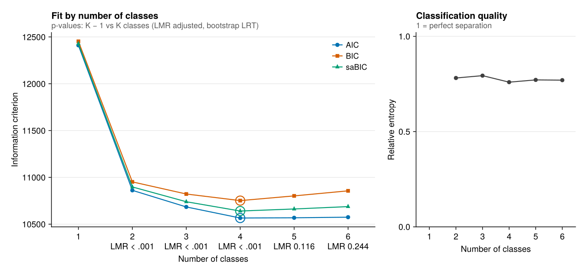
The LMR p-values (adjusted Vuong–Lo–Mendell–Rubin test of K − 1 against K classes) are printed under the x-axis ticks; pass blrt = [blrt(m) for m in fits[2:end]] to add the bootstrap LRT as well. The minimum of each criterion is circled: all three information criteria pick the four generating classes.
m = fits[4]
profileplot(m; error = :ci, labels = ["Low adversity", "Maltreatment", "Household", "High adversity"])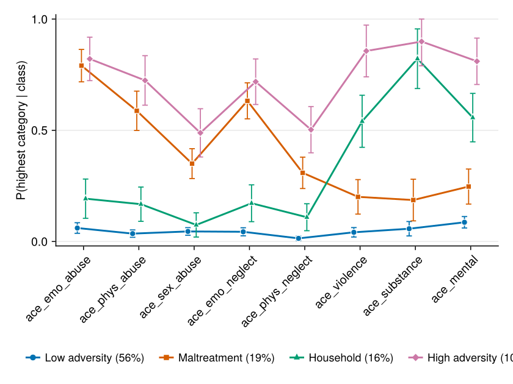
Items with more than two categories get one panel per category by default (category = :all); choose one category with category = :last, :first or a category value. For binary items the default is the last category; category = :all shows both:
profileplot(m; category = :all)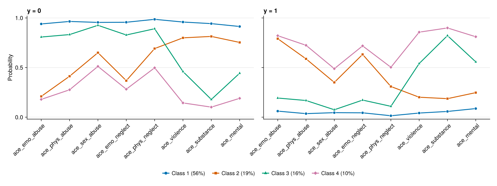
For latent profile analysis the means are shown with 95% confidence intervals (error = :ci), within-profile standard deviations (error = :sd) or without bars; standardize = true puts every indicator on the scale of its model-implied overall mean and SD. Six wellbeing indicators of 1,000 adults (wellbeing), four generating profiles:
w = dataset("wellbeing")
p = lpa(w[:, [:sleep, :activity, :fruitveg, :stress, :lonely, :lifesat]], 4; variances = :varying)
profileplot(p; standardize = true, labels = ["Typical", "Thriving", "Stressed", "Isolated"])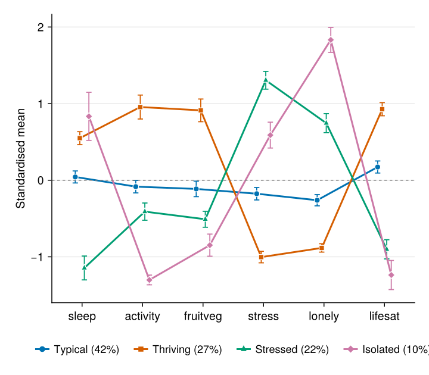
classsizeplot(m; counts = :both)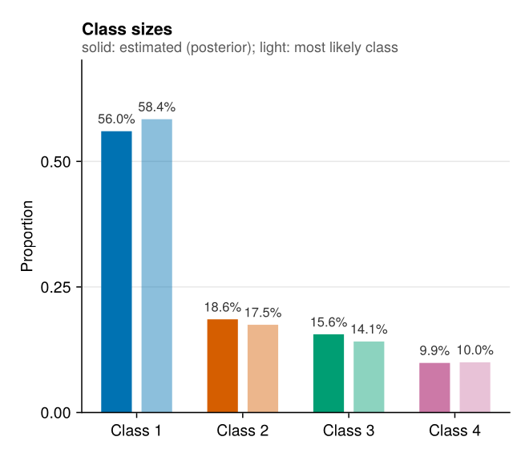
posteriorplot(m; threshold = 0.7)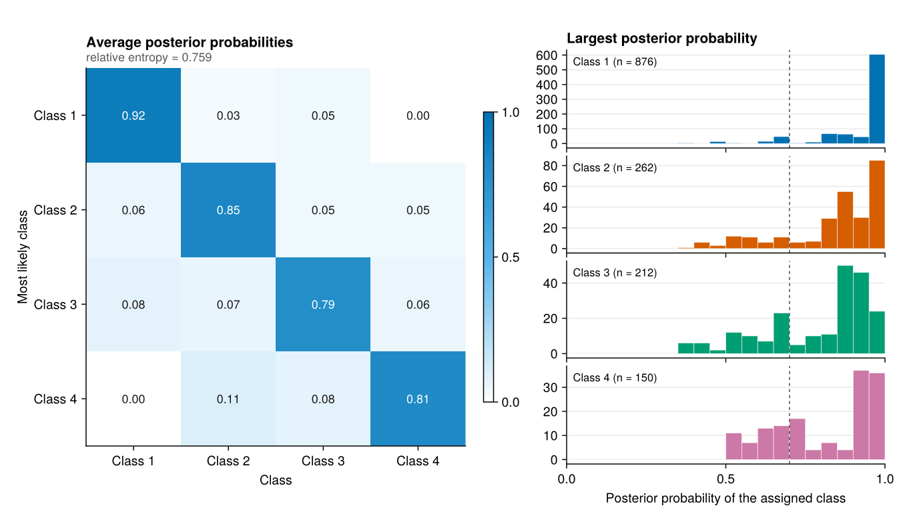
Several plots in one figure
fig = Figure(size = (1000, 420))
profileplot(fig[1, 1], p)
classsizeplot(Axis(fig[1, 2]), p)
colsize!(fig.layout, 2, Relative(0.35))
fig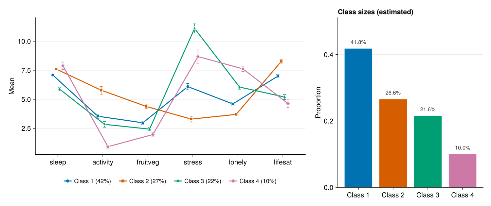
Bootstrap likelihood-ratio test
Three against four wellbeing profiles:
b = blrt(p; reps = 100)
blrtplot(b)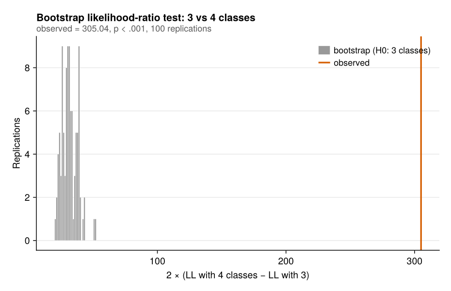
Auxiliary variables
Covariates of the ACE classes (three-step, against Low adversity) and two outcomes by class:
coefplot(r3step(m, d[:, [:female, :age, :low_parent_edu]]; ref = 1))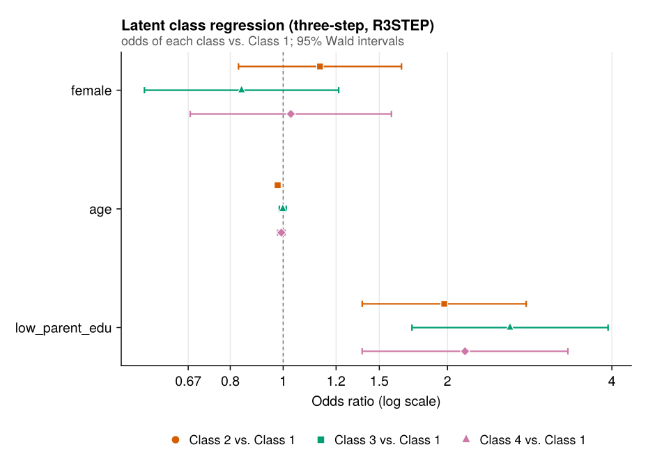
auxplot(bch(m, d.depress; name = "depressive symptoms"))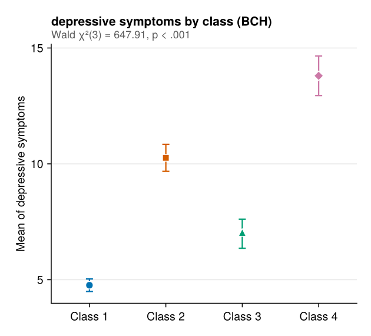
auxplot(dcat(m, d.srh; name = "self-rated health"))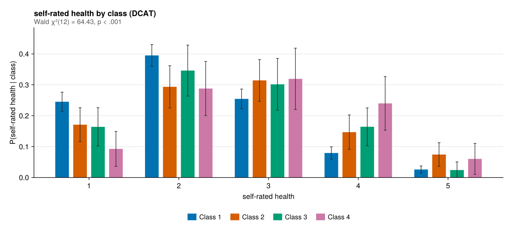
Latent transition analysis
Substance-use statuses at grades 8, 10 and 12 (substance):
s = dataset("substance")
t = lta(s, [[:alc_1, :binge_1, :cig_1, :mj_1], [:alc_2, :binge_2, :cig_2, :mj_2],
[:alc_3, :binge_3, :cig_3, :mj_3]], 3)
transitionplot(t)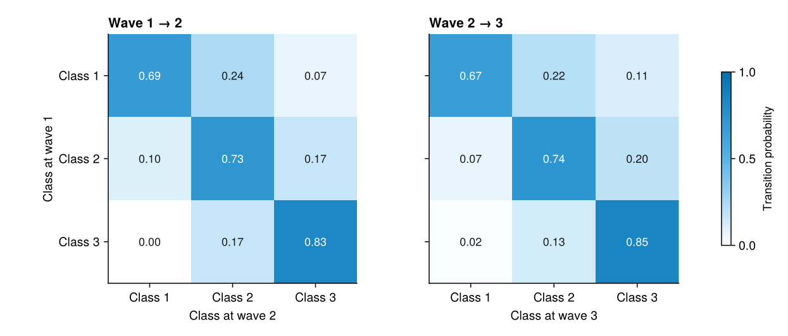
prevalenceplot(t; style = :bars)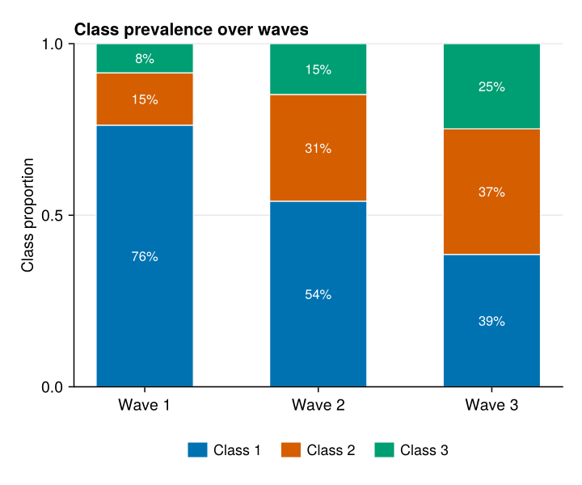
profileplot(t; wave = 1)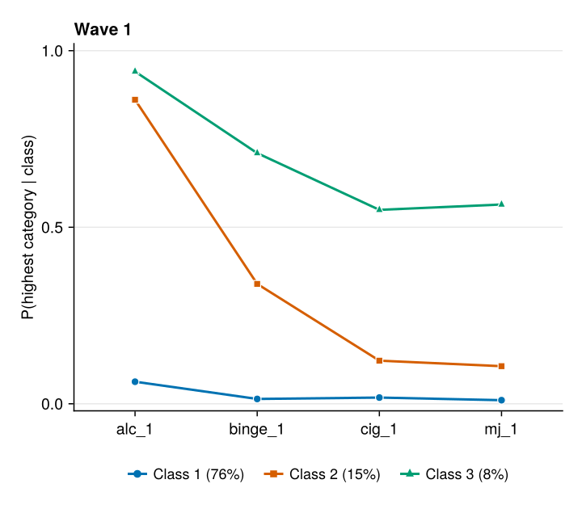
Growth mixture models
Depressive symptoms from age 12 to 16 (depression):
g = dataset("depression")
gm = growth(g[:, [:dep1, :dep2, :dep3, :dep4, :dep5]], 4; model = :gmm, degree = 2)
trajectoryplot(gm; individuals = 80)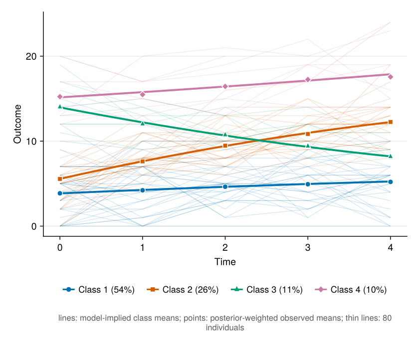
Parallel processes get one panel per outcome (depression and anxiety):
pp = growth(g, 4; model = :lcga, processes = [[:dep1, :dep2, :dep3, :dep4, :dep5],
[:anx1, :anx2, :anx3, :anx4, :anx5]])
trajectoryplot(pp)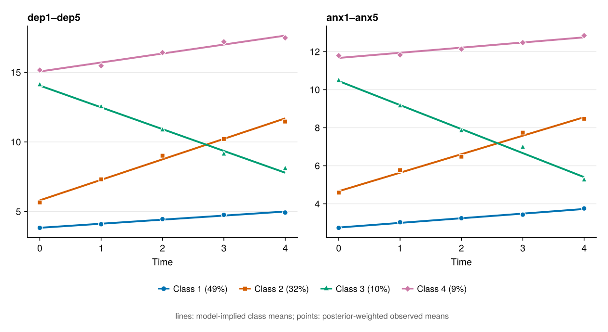
Multigroup models
The ACE classes of men and women, with the sexual-abuse item group-specific:
mg = lca(Y, 4; group = d.female, invariance = [:ace_sex_abuse])
groupprofileplot(mg)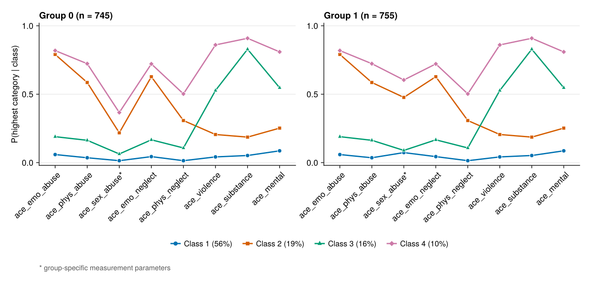
Theme and palette
mixturepalette()8-element Vector{String}:
"#0072B2"
"#D55E00"
"#009E73"
"#CC79A7"
"#E69F00"
"#56B4E9"
"#F0E442"
"#000000"set_theme!(mixturetheme()) applies the package theme to your own figures; every plotting function takes theme = mixturetheme(fontsize = 16) (or any Makie Theme) and figure = (size = (800, 500),).
Functions
LatentMixtures.mixturetheme — Function
mixturetheme(; fontsize = 13, font = nothing) -> Makie.ThemeThe Makie theme of every plot of the package (and of LatentClassCausal and TextLatentModels): Okabe–Ito colours (mixturepalette), light horizontal grid lines, no top/right spines, bold left-aligned titles, frameless legends.
Arguments
fontsize = 13: base font size in points.font = nothing: regular font (a font name or file);nothingkeeps the Makie default.
Returns
A Makie.Theme; pass it as theme = … to a plotting function, apply it globally with set_theme!(mixturetheme()), or locally with with_theme(mixturetheme()) do … end.
Examples
using LatentMixtures, CairoMakie
# Larger fonts for a slide: the profiles of the four ACE classes
d = dataset("aces")
m = lca(d[:, r"^ace_"], 4)
fig = profileplot(m; theme = mixturetheme(fontsize = 16))
set_theme!(mixturetheme()) # use the package theme for your own figures tooNotes
Needs a Makie backend (using CairoMakie or using GLMakie); without one an error says so.
LatentMixtures.mixturepalette — Function
mixturepalette(n = 8) -> Vector{String}The colour-blind-safe Okabe–Ito palette, in the order the plots of LatentMixtures, LatentClassCausal and TextLatentModels use for classes (blue, vermilion, bluish green, reddish purple, orange, sky blue, yellow, black); the same colours and order as the R package latentmixtures (lm_palette()).
Arguments
n = 8: number of colours. More than eight colours repeat the palette.
Returns
A vector of n hex colour strings (e.g. "#0072B2"), usable as a Makie color.
Examples
using LatentMixtures
# The Okabe–Ito colours used for classes 1, 2, 3 in every plot
mixturepalette(3) # ["#0072B2", "#D55E00", "#009E73"]Notes
Needs no plotting package. Class k of every plot is drawn in mixturepalette()[k].
References
- Okabe, M., & Ito, K. (2008). Color universal design (CUD): How to make figures and presentations that are friendly to colorblind people. https://jfly.uni-koeln.de/color/
LatentMixtures.profileplot — Function
profileplot(m::LatentMixtureModel; category = nothing, items = nothing, error = nothing,
standardize = false, level = 0.95, labels = nothing, figure = (;),
theme = mixturetheme()) -> Makie.Figure
profileplot(m::LTAModel; wave = 1, kwargs...) -> Makie.Figure
profileplot(m::MultiGroupModel; kwargs...) -> Makie.Figure # = groupprofileplot
profileplot(pos::Makie.GridPosition, m; kwargs...) -> Makie.FigureClass profiles: for an LCA (or a categorical LTA) the item-response probabilities of every class, one line per class across the indicators; for an LPA (or a continuous LTA) the profile means with error bars.
Arguments
m: anlcaorlpafit, anltafit (profiles of wavewave) or a multigroup model (forwards togroupprofileplot). Growth models: usetrajectoryplot.
Keywords
category = nothing(LCA): the category whose probability is drawn::last(highest category),:first, a category value (e.g.2), or:all(one panel per category position). Default:lastwhen every indicator is binary,:allotherwise.items = nothing: indicators to show (names or indices, in that order); default all.error = nothing: error bars::ci(Wald interval atlevelfrom the robust standard errors ofparameters),:se(± 1 SE),:sd(LPA: ± 1 within-profile SD) or:none. Default:cifor a single-group LPA,:sdfor a continuous LTA,:noneotherwise. Standard errors are available forlca/lpafits only.standardize = false(LPA): draw(μₖ − μ̄)/σ̄, the means (and error bars) in units of the model-implied overall SD of each indicator, centred at its model-implied overall mean (μ̄ = Σₖ πₖ μₖ,σ̄² = Σₖ πₖ(σₖ² + μₖ²) − μ̄²). Error bars are divided byσ̄, treatingμ̄andσ̄as fixed (their sampling variability is not propagated).level = 0.95: confidence level oferror = :ci.wave = 1(LTA): the wave whose measurement model is drawn.
Common keywords
labels = nothing: class labels (one per class), e.g.["Low", "Moderate", "High"]; default"Class 1","Class 2", ….figure = (;): keyword arguments forMakie.Figure(e.g.size = (800, 500)), used when the function creates the figure.theme = mixturetheme(): the Makie theme the axes are created under.
Returns
A Makie.Figure. With a Makie.GridPosition (fig[1, 2]) as first argument the plot is drawn into that cell of an existing figure, and that figure is returned.
The legend shows the class labels with the estimated class percentages.
Examples
using LatentMixtures, CairoMakie
# Profiles of the four ACE classes (aces) and the four wellbeing profiles (wellbeing)
d = dataset("aces")
m = lca(d[:, r"^ace_"], 4)
fig = profileplot(m) # P(item = 1 | class); class 4 (High adversity) is high everywhere
profileplot(m; category = :all) # every category of every item
save("ace_profiles.png", fig)
w = dataset("wellbeing")
p = lpa(w[:, [:sleep, :activity, :fruitveg, :stress, :lonely, :lifesat]], 4; variances = :varying)
profileplot(p; standardize = true, labels = ["Typical", "Thriving", "Stressed", "Isolated"])Notes
Computing standard errors (error = :ci/:se) calls parameters the first time, which can take a while for large models; error = :none avoids it.
LatentMixtures.groupprofileplot — Function
groupprofileplot(m::MultiGroupModel; groups = nothing, category = nothing, items = nothing,
error = :none, labels = nothing, figure = (;),
theme = mixturetheme()) -> Makie.Figure
groupprofileplot(pos::Makie.GridPosition, m; kwargs...) -> Makie.FigureClass profiles of a multigroup LCA or LPA (lca/lpa with group), one panel per group with the same class colours, so that (non-)invariant indicators stand out. Each panel title gives the group label and its size.
Arguments
m: aMultiGroupModel.
Keywords
groups = nothing: groups to draw (labels or indices intom.groups); default all.category = nothing: the category whose probability is drawn (LCA)::last(default),:firstor a category value; one category per figure (:allis not available here).items = nothing: as inprofileplot.error = :none::sd(LPA: ± 1 within-profile SD) or:none(standard errors are not available for multigroup models).
Common keywords
labels = nothing: class labels (one per class), e.g.["Low", "Moderate", "High"]; default"Class 1","Class 2", ….figure = (;): keyword arguments forMakie.Figure(e.g.size = (800, 500)), used when the function creates the figure.theme = mixturetheme(): the Makie theme the axes are created under.
Returns
A Makie.Figure. With a Makie.GridPosition (fig[1, 2]) as first argument the plot is drawn into that cell of an existing figure, and that figure is returned.
The class percentages in the legend are pooled over the drawn groups. Indicators with group-specific parameters (m.noninvariant) are marked with * on the x axis.
Examples
using LatentMixtures, CairoMakie
# ACE class profiles of men and women when the sexual-abuse item may differ by sex
d = dataset("aces")
part = lca(d[:, r"^ace_"], 4; group = d.female, invariance = [:ace_sex_abuse])
groupprofileplot(part) # panels: group 1 = men, group 2 = womenLatentMixtures.classsizeplot — Function
classsizeplot(m; counts = :estimated, labels = nothing, figure = (;),
theme = mixturetheme()) -> Makie.Figure
classsizeplot(pos::Makie.GridPosition, m; kwargs...) -> Makie.Figure
classsizeplot(ax::Makie.Axis, m; kwargs...) -> Makie.FigureClass proportions as bars labelled with their percentages: one bar per class for a single-group model, bars per class grouped by group for a multigroup model, and by wave for an LTA.
Arguments
m: aLatentMixtureModel(lca,lpa,growth),MultiGroupModelorLTAModel.
Keywords
counts = :estimated::estimated(model-estimated proportions,classprobs),:modal(shares of most likely class membership) or:both(side by side; single-group models only).
Common keywords
labels = nothing: class labels (one per class), e.g.["Low", "Moderate", "High"]; default"Class 1","Class 2", ….figure = (;): keyword arguments forMakie.Figure(e.g.size = (800, 500)), used when the function creates the figure.theme = mixturetheme(): the Makie theme the axes are created under.
Returns
A Makie.Figure. With a Makie.GridPosition (fig[1, 2]) as first argument the plot is drawn into that cell of an existing figure, and that figure is returned.
Examples
using LatentMixtures, CairoMakie
# Sizes of the four ACE classes: estimated proportions and modal counts
d = dataset("aces")
classsizeplot(lca(d[:, r"^ace_"], 4); counts = :both)LatentMixtures.posteriorplot — Function
posteriorplot(m; wave = 1, bins = 20, threshold = nothing, labels = nothing, figure = (;),
theme = mixturetheme()) -> Makie.Figure
posteriorplot(pos::Makie.GridPosition, m; kwargs...) -> Makie.FigureClassification quality. Left: the average posterior probabilities by most likely class (rows: assigned class, columns: class; Mplus "Average Latent Class Probabilities for Most Likely Latent Class Membership"), with the values in the cells; the diagonal is the mean probability of the assigned class. Right: histograms of the largest posterior probability of every case, one panel per assigned class. The relative entropy is in the title.
Arguments
m: aLatentMixtureModel,MultiGroupModelorLTAModel(marginal posteriors of wavewave).
Keywords
wave = 1(LTA): the wave.bins = 20: histogram bins.threshold = nothing: draw a dashed reference line at this posterior probability (e.g.0.7).
Common keywords
labels = nothing: class labels (one per class), e.g.["Low", "Moderate", "High"]; default"Class 1","Class 2", ….figure = (;): keyword arguments forMakie.Figure(e.g.size = (800, 500)), used when the function creates the figure.theme = mixturetheme(): the Makie theme the axes are created under.
Returns
A Makie.Figure. With a Makie.GridPosition (fig[1, 2]) as first argument the plot is drawn into that cell of an existing figure, and that figure is returned.
Examples
using LatentMixtures, CairoMakie
# How well are adults assigned to the ACE classes? Average posteriors and histograms
d = dataset("aces")
posteriorplot(lca(d[:, r"^ace_"], 4); threshold = 0.7) # most posteriors exceed 0.7Notes
For a LatentMixtureModel the matrix is classification_table(m).avgpost (weighted with sampling weights); for multigroup and LTA models it is computed from the posteriors.
LatentMixtures.enumerationplot — Function
enumerationplot(models::AbstractVector; criteria = (:aic, :bic, :sabic), entropy = true,
lmr = nothing, blrt = nothing, xlabels = nothing, figure = (;),
theme = mixturetheme()) -> Makie.Figure
enumerationplot(pos::Makie.GridPosition, models; kwargs...) -> Makie.FigureClass enumeration: information criteria against the number of classes (the minimum of each criterion is circled), and the relative entropy in a second panel; optionally the LMR (TECH11) and bootstrap LRT (TECH14) p-values of K − 1 against K classes under the x-axis ticks.
Arguments
models: fitted models with increasing numbers of classes (LatentMixtureModels,MultiGroupModels orLTAModels), e.g.[lca(Y, k) for k in 1:6].
Keywords
criteria = (:aic, :bic, :sabic): any of:aic,:bic,:sabic,:caic,:ll.entropy = true: add the relative-entropy panel.lmr = nothing:truecomputeslmrfor everyLatentMixtureModelwithK ≥ 2; or a vector ofLMRResults (matched to the models byK).blrt = nothing: a vector ofBLRTResults (matched byK), ortrueto runblrtwith its defaults for every model withK ≥ 2(slow).xlabels = nothing: tick labels instead ofK(e.g. when several models have the sameK); the models are then drawn at positions1, 2, ….figure = (;),theme = mixturetheme(): as inprofileplot.
Returns
A Makie.Figure.
Examples
using LatentMixtures, CairoMakie
# Class enumeration for the ACE items: information criteria, entropy and LMR p-values
d = dataset("aces")
fits = [lca(d[:, r"^ace_"], k; starts = (400, 80)) for k in 1:6] # more starts for 5–6 classes
enumerationplot(fits; lmr = true) # BIC is smallest at K = 4, the generating numberLatentMixtures.blrtplot — Function
blrtplot(r::BLRTResult; bins = 30, figure = (;), theme = mixturetheme()) -> Makie.Figure
blrtplot(pos::Makie.GridPosition, r; kwargs...) -> Makie.Figure
blrtplot(ax::Makie.Axis, r; kwargs...) -> Makie.FigureThe bootstrap distribution of the likelihood-ratio statistic 2(LL_K − LL_{K−1}) of blrt (histogram of the successful replications) and the observed statistic (vertical line), with the bootstrap p-value in the title.
Arguments
r: aBLRTResult.
Keywords
bins = 30: histogram bins.figure = (;),theme = mixturetheme(): as inprofileplot.
Returns
A Makie.Figure.
Examples
using LatentMixtures, CairoMakie
# Bootstrap distribution of the 3- vs 4-profile likelihood-ratio statistic (wellbeing)
w = dataset("wellbeing")
b = blrt(lpa(w[:, [:sleep, :activity, :fruitveg, :stress, :lonely, :lifesat]], 4; variances = :varying); reps = 100)
blrtplot(b) # the observed statistic lies far to the right of the bootstrap drawsLatentMixtures.transitionplot — Function
transitionplot(m::LTAModel; digits = 2, labels = nothing, figure = (;),
theme = mixturetheme()) -> Makie.Figure
transitionplot(pos::Makie.GridPosition, m; kwargs...) -> Makie.FigureTransition probabilities of a latent transition analysis as heatmaps, one per transition t → t + 1 (one in total for stationary transitions): rows are the classes at wave t, columns the classes at wave t + 1, cells P(Cₜ₊₁ = l | Cₜ = k) printed with digits decimals.
Arguments
m: anLTAModel.
Keywords
digits = 2: decimals of the cell values.
Common keywords
labels = nothing: class labels (one per class), e.g.["Low", "Moderate", "High"]; default"Class 1","Class 2", ….figure = (;): keyword arguments forMakie.Figure(e.g.size = (800, 500)), used when the function creates the figure.theme = mixturetheme(): the Makie theme the axes are created under.
Returns
A Makie.Figure. With a Makie.GridPosition (fig[1, 2]) as first argument the plot is drawn into that cell of an existing figure, and that figure is returned.
Examples
using LatentMixtures, CairoMakie
# Transitions between substance-use statuses, grades 8 → 10 → 12
s = dataset("substance")
W = [[:alc_1, :binge_1, :cig_1, :mj_1], [:alc_2, :binge_2, :cig_2, :mj_2],
[:alc_3, :binge_3, :cig_3, :mj_3]]
transitionplot(lta(s, W, 3)) # heavy diagonals; movement mostly towards more useLatentMixtures.prevalenceplot — Function
prevalenceplot(m::LTAModel; style = :lines, labels = nothing, figure = (;),
theme = mixturetheme()) -> Makie.Figure
prevalenceplot(pos::Makie.GridPosition, m; kwargs...) -> Makie.Figure
prevalenceplot(ax::Makie.Axis, m; kwargs...) -> Makie.FigureClass prevalences over waves of a latent transition analysis, P(Cₜ = k) from classprobs (P(C₁) and P(Cₜ₊₁) = P(Cₜ)'Aₜ).
Arguments
m: anLTAModel.
Keywords
style = :lines::lines(one line per class) or:bars(stacked bars per wave).
Common keywords
labels = nothing: class labels (one per class), e.g.["Low", "Moderate", "High"]; default"Class 1","Class 2", ….figure = (;): keyword arguments forMakie.Figure(e.g.size = (800, 500)), used when the function creates the figure.theme = mixturetheme(): the Makie theme the axes are created under.
Returns
A Makie.Figure. With a Makie.GridPosition (fig[1, 2]) as first argument the plot is drawn into that cell of an existing figure, and that figure is returned.
Examples
using LatentMixtures, CairoMakie
# Prevalence of each substance-use status at grades 8, 10 and 12
s = dataset("substance")
W = [[:alc_1, :binge_1, :cig_1, :mj_1], [:alc_2, :binge_2, :cig_2, :mj_2],
[:alc_3, :binge_3, :cig_3, :mj_3]]
prevalenceplot(lta(s, W, 3); style = :bars) # Non-use shrinks from 76% to 39%LatentMixtures.trajectoryplot — Function
trajectoryplot(m::LatentMixtureModel; observed = true, individuals = 0, seed = 1,
npoints = 100, labels = nothing, figure = (;),
theme = mixturetheme()) -> Makie.Figure
trajectoryplot(pos::Makie.GridPosition, m; kwargs...) -> Makie.FigureTrajectories of a growth mixture model (growth: LCGA, GMM, parallel processes): the model-implied mean curve of every class (the polynomial Σ_d α_dk t^d evaluated on a fine grid of times), the posterior-weighted observed means Σᵢ pᵢₖ yᵢₜ / Σᵢ pᵢₖ at each measurement occasion (points), and optionally a random sample of individual trajectories coloured by most likely class. Parallel-process models get one panel per process.
Arguments
m: aLatentMixtureModelwithkind:LCGAor:GMM.
Keywords
observed = true: draw the posterior-weighted observed means (pairwise present measures; weighted by sampling weights, if any).individuals = 0: number of randomly chosen individual trajectories to draw (thin, translucent lines).seed = 1: seed for choosing the individuals.npoints = 100: grid points of the model-implied curves.
Common keywords
labels = nothing: class labels (one per class), e.g.["Low", "Moderate", "High"]; default"Class 1","Class 2", ….figure = (;): keyword arguments forMakie.Figure(e.g.size = (800, 500)), used when the function creates the figure.theme = mixturetheme(): the Makie theme the axes are created under.
Returns
A Makie.Figure. With a Makie.GridPosition (fig[1, 2]) as first argument the plot is drawn into that cell of an existing figure, and that figure is returned.
Examples
using LatentMixtures, CairoMakie
# Trajectories of depressive symptoms (CES-D) from age 12 to 16 in four classes
g = dataset("depression")
m = growth(g[:, [:dep1, :dep2, :dep3, :dep4, :dep5]], 4; model = :gmm, degree = 2)
trajectoryplot(m; individuals = 100) # class means, observed means and 100 individual curvesNotes
The data are taken from the fitted model; nothing else is needed.
LatentMixtures.auxplot — Function
auxplot(r::BCHResult; level = 0.95, labels = nothing, figure = (;),
theme = mixturetheme()) -> Makie.Figure
auxplot(rs::AbstractVector{BCHResult}; kwargs...) -> Makie.Figure
auxplot(r::DCATResult; level = 0.95, labels = nothing, kwargs...) -> Makie.Figure
auxplot(pos::Makie.GridPosition, r; kwargs...) -> Makie.FigureDistal outcomes by latent class from the three-step methods. bch: the class means with Wald confidence intervals (one panel per outcome for a vector of results), with the overall Wald test in the title. dcat: the probability of each outcome category within each class with confidence intervals (bars dodged by class).
Arguments
r: aBCHResult, a vector of them, or aDCATResult.
Keywords
level = 0.95: confidence level (estimate ± z·SE; DCAT intervals are clipped to [0, 1]).
Common keywords
labels = nothing: class labels (one per class), e.g.["Low", "Moderate", "High"]; default"Class 1","Class 2", ….figure = (;): keyword arguments forMakie.Figure(e.g.size = (800, 500)), used when the function creates the figure.theme = mixturetheme(): the Makie theme the axes are created under.
Returns
A Makie.Figure. With a Makie.GridPosition (fig[1, 2]) as first argument the plot is drawn into that cell of an existing figure, and that figure is returned.
Examples
using LatentMixtures, CairoMakie
# Depressive symptoms and self-rated health by ACE class (BCH and DCAT)
d = dataset("aces")
m = lca(d[:, r"^ace_"], 4)
auxplot(bch(m, d.depress; name = "depress")) # means with 95% CIs
auxplot(dcat(m, d.srh; name = "srh")) # category probabilities by classLatentMixtures.coefplot — Function
coefplot(r::R3StepResult; level = 0.95, intercept = false, labels = nothing,
figure = (;), theme = mixturetheme()) -> Makie.Figure
coefplot(m::LatentMixtureModel; kwargs...) -> Makie.Figure
coefplot(pos::Makie.GridPosition, r; kwargs...) -> Makie.FigureOdds ratios of the multinomial logistic regression of latent class on covariates, on a log scale with Wald confidence intervals and a reference line at 1: one row per covariate, one colour per class (each class against the reference class). Works for the three-step r3step and for one-step models fitted with covariates (m.regression).
Arguments
r: anR3StepResult, or aLatentMixtureModelfitted withcovariates.
Keywords
level = 0.95: confidence level,exp(β ± z·SE).intercept = false: include the intercepts.
Common keywords
labels = nothing: class labels (one per class), e.g.["Low", "Moderate", "High"]; default"Class 1","Class 2", ….figure = (;): keyword arguments forMakie.Figure(e.g.size = (800, 500)), used when the function creates the figure.theme = mixturetheme(): the Makie theme the axes are created under.
Returns
A Makie.Figure. With a Makie.GridPosition (fig[1, 2]) as first argument the plot is drawn into that cell of an existing figure, and that figure is returned.
Examples
using LatentMixtures, CairoMakie
# Odds ratios of the covariates for each ACE class, relative to Low adversity
d = dataset("aces")
r = r3step(lca(d[:, r"^ace_"], 4), d[:, [:female, :age, :low_parent_edu]]; ref = 1)
coefplot(r) # low_parent_edu: OR ≈ 2–2.6 for every adversity class